Week 11
A researcher investigates whether a new treatment reduces depression symptoms over time.
Question 1: Exploratory Analysis
Question 2: Model Specification
Consider the following models, where \(t_{ij}\) represents time and \(T_i\) indicates treatment assignment.
Model 1: Ordinary Linear Regression
\[ Y_{ij}=\beta_0+\beta_1t_{ij}+\beta_2T_i+\beta_3t_{ij}T_i+\epsilon_{ij} \]
Model 2: Random Intercept
\[ Y_{ij}=\beta_0+\beta_1t_{ij}+\beta_2T_i+\beta_3t_{ij}T_i+b_{0i}+\epsilon_{ij} \]
Model 3: Random Intercept and Slope
\[ Y_{ij}=\beta_0+\beta_1t_{ij}+\beta_2T_i+\beta_3t_{ij}T_i+b_{0i}+b_{1i}t_{ij}+\epsilon_{ij} \]
Question 3: Model Selection and Interpretation
Suppose Models 2 and 3 are fitted using maximum likelihood, giving:
| Model | AIC | |
|---|---|---|
| Model 2: Random Intercept | 1840 | |
| Model 3: Random Intercept + Slope | 1795 |
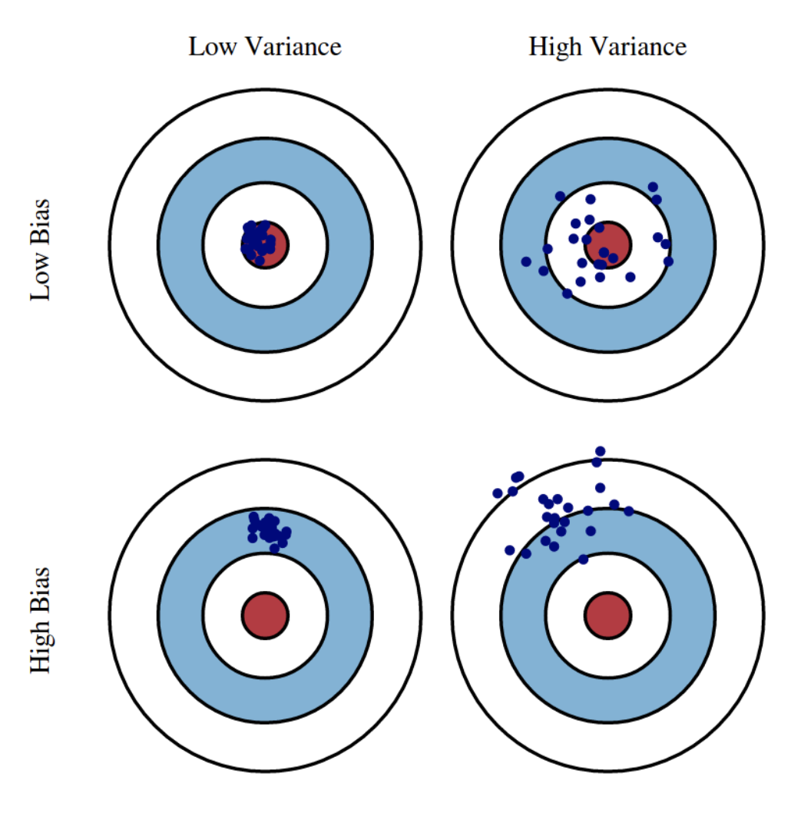
Suppose that we have an estimator of a parameter, say \(\hat\theta\) for a parameter \(\theta\) in a data generating model. Then the \(\mathrm{bias}(\hat\theta)\) is defined by
\[\mathrm{bias}(\hat\theta)=E[\hat\theta]-\theta\]
For example, suppose that you have a data generating model \(y_i=\mathbf{x}_i^T\boldsymbol\beta+\epsilon_i\) with \(\epsilon_i\overset{i.i.d.}{\sim}N(0,\sigma^2)\). Then the bias of the fitted value \(X\hat\beta_{LS}\) is zero because
\[E[X\hat\beta_{LS}]=E\left(X(X^TX)^{-1}X^Ty\right)=X\beta\]
Suppose that the true DGP is \(y_i=f(x_i)+\epsilon_i\), where \(f(x_i)\) and \(\epsilon_i\) are independent and \(\epsilon_i\) has mean 0 and variance \(\sigma^2\).
If we consider ‘any’ method \(\hat f\) that obtains \(f\), then the mean square error (MSE), that can be used to quantify how closely \(\hat f(x)\) approximates \(y\).
\[\mathrm{MSE}(\hat f)=E\left[(y-\hat f(x))^2\right]\]
A more natural option is the ‘empirical’ MSE, which is computed by
\[\widehat{\mathrm{MSE}}(\hat f)=\frac{1}{n}\sum_{i=1}^n(y_i-\hat f(x_i))^2\]
Bias-variance tradeoff:
\[\mathrm{MSE}(\hat f(x))=\sigma^2+\mathrm{Bias}^2(\hat f(x))+\mathrm{Var}(\hat f(x))\]
where
\[\begin{aligned} \mathrm{MSE}(\hat f)&=E[(y-\hat f)^2]=E[(f+\epsilon-\hat f)^2]\\ &=E[(f-E(\hat f)+\epsilon+E(\hat f)-\hat f)^2]\\ &=E[(f-E(\hat f))^2]+E[\epsilon^2]+E[(E(\hat f)-\hat f)^2]\\ &\quad+2(f-E(\hat f))E[\epsilon]+2E[\epsilon]E[E(\hat f)-\hat f]\\ &\quad+2E[E(\hat f)-\hat f](f-E(\hat f))\\ &=(f-E(\hat f))^2+E[\epsilon^2]+E[(E(\hat f)-\hat f)^2]\\ &=\mathrm{Bias}^2(\hat f)+\sigma^2+\mathrm{Var}(\hat f) \end{aligned}\]
Bias-variance tradeoff provides an explicit understanding of how ‘models’ work.
Otherwise, MSE could easily go to 0 just as the model complexity increases
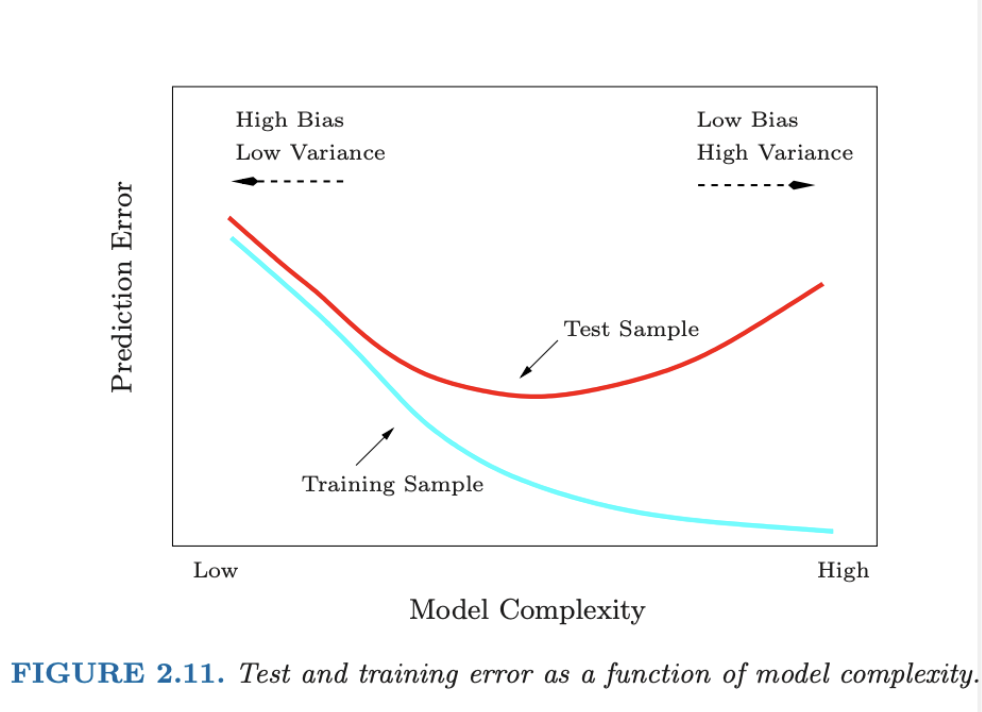
Why do we even want to avoid using ordinary least squares?
Model interpretability: not all of the predictors would be associated with the outcome. Including such irrelevant variables leads to unnecessary complexity in the resulting model.
Prediction accuracy: OLS would be fine when \(n\gg p\). However, it would easily overfit when \(n\) is not much larger than \(p\). It does not even have a unique solution when \(p>n\).
Penalized regression finds the \(\beta\) that minimizes the following objective function:
\[\sum_{i=1}^n(y_i-\mathbf{x}_i^T\boldsymbol\beta)^2+P_\lambda(\boldsymbol\beta)\]
where \(P_\lambda(\beta)\) is the penalty function that depending on \(\lambda\).
For non-continuous data, the ‘SSE’ part above could be replaced by (or ‘generalized to’) the negative log likelihood. For binary data,
\[\underbrace{-\sum_{i=1}^n\{y_i\log(p_i)+(1-y_i)\log(1-p_i)\}}_{\text{negative log likelihood}}+\underbrace{P_\lambda(\beta)}_{\text{penalty}}\]
AIC and BIC as Penalized Regression
\[\mathrm{AIC}(\beta)=-2\log L(\beta)+2\times\|\beta\|_0\] \[\mathrm{BIC}(\beta)=-2\log L(\beta)+\log(n)\times\|\beta\|_0\]
Finding \(\hat\beta\) that minimizes \(\mathrm{AIC}(\beta)\) (or \(\mathrm{BIC}(\beta)\)) is one way to prevent overfitting by imposing a \(L_0\) penalty on \(\beta\) with \(\lambda=2\) (AIC) or \(\lambda=\log(n)\) (BIC) where
\[\|\beta\|_0=\sum_{j=1}^p I(\beta_j\ne 0)\]
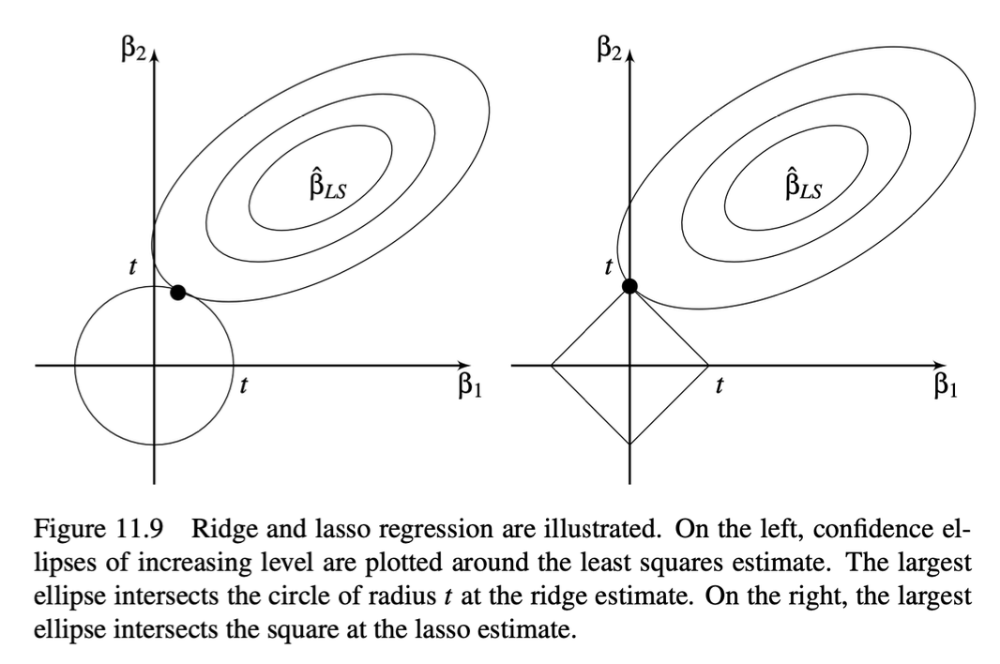
1. Ridge Regression
With \(\lambda>0\), the ridge regression minimizes the following objective function:
\[\|y-X\beta\|_2^2+\lambda\|\beta\|_2^2\quad\text{or, equivalently,}\quad\sum_{i=1}^n(y_i-x_i^T\beta)^2+\lambda\sum_{j=1}^p\beta_j^2\]
1. Ridge Regression
\[ \hat\beta_{\mathrm{ridge},\lambda} ={\color{blue}{(X^TX+\lambda I)}^{-1}}X^Ty \]
Note that the blue part is always invertible, even when \(p>n\)! There always exists a unique solution.
\(\hat\beta_{\mathrm{ridge},\lambda}\) is a biased estimator for \(\beta\):
\[\mathrm{bias}(\hat\beta_{\mathrm{ridge},\lambda})=E[\hat\beta_{\mathrm{ridge},\lambda}]-\beta=[(X^TX+\lambda I)^{-1}X^TX-I]\beta\ne0\]
unless \(\beta=0\).
1. Ridge Regression: Tuning Parameter
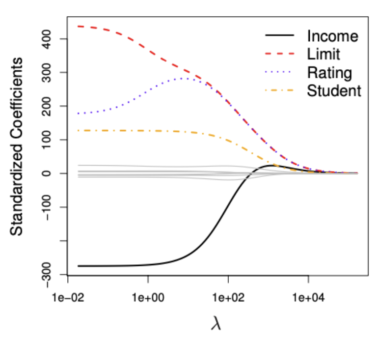
1. Ridge Regression
Advantages:
Disadvantages:
1. Standardization in Ridge Regression
The ridge penalty (and others in Lecture 7) is scale-dependent: larger-scaled covariates or response values are penalized less.
Standardization
Each covariate (\(x_j\)) and response (\(y\)) are scaled to zero mean and unit variance:
\[x_{ij}^{std}=\frac{x_{ij}-\bar x_j}{s_j}\quad\text{and}\quad y^{std}=\frac{y-\bar y}{s_y}.\]
1. Standardization in Ridge Regression
Estimated Coefficients from Standardized Data:
\(\hat\beta_j^{std}\) = estimated coefficients on standardized covariates and response.
Rescaling to the original scale:
\[\hat\beta_j=\frac{\hat\beta_j^{std}\cdot s_y}{s_j},\quad\text{and}\quad\hat\beta_0=\bar y-\sum_j\hat\beta_j\bar x_j,\]
where:
2. LASSO
When \(\lambda>0\) is given, find the \(\beta\) that minimizes the following objective function:
\[\sum_{i=1}^n(y_i-x_i^T\beta)^2+\lambda\sum_{j=1}^p|\beta_j|\]
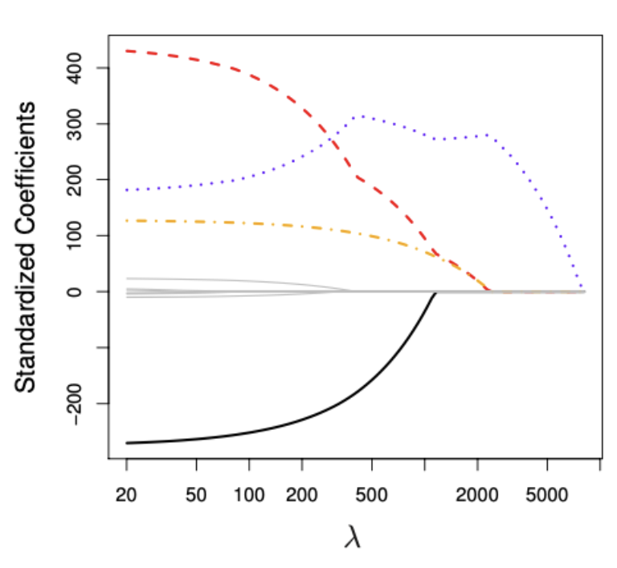
2. LASSO: Finding the Solution
When there is one covariate \(x_i\) and a response \(y_i\) where both are standardized, we consider the following optimization problem:
\[\frac12\sum_{i=1}^n(y_i^{std}-\beta x_i^{std})^2+\lambda|\beta|\]
The solution for the optimization problem above is given by
\[\hat\beta_{\mathrm{LASSO},\lambda}=\mathrm{sign}(\hat\rho_{x,y})\cdot\max\left(0,|\hat\rho_{x,y}|-\frac\lambda n\right)\]
where \(\hat\rho_{x,y}\) is the correlation between \(x\) and \(y\).
2. LASSO: Finding the Solution
Coordinate descent: update each parameter until reaching the convergence.
Initialization: Set \(\hat\beta=0\).
Coordinate-wise update: For each \(j=1,\ldots,p\), update \(\hat\beta_j\) by fixing all the other parameters estimates as fixed (\(\hat\beta_1,\ldots,\hat\beta_{j-1},\beta_{j+1},\ldots,\beta_p\)) with the current estimates:
\[\begin{aligned}\hat\beta_j&=\arg\min_{\beta_j}\left\{\sum_{i=1}^n(y_i-\sum_{j=1}^px_{ij}\beta_j)^2+\lambda\sum_{j=1}^p|\beta_j|\right\}\\ &=\arg\min_{\beta_j}\left\{\sum_{i=1}^n(y_i-\sum_{k\ne j}x_{ik}\beta_k-x_{ij}\beta_j)^2+\lambda|\beta_j|\right\}\end{aligned}\]
Repeat Step 2 until convergence: Iterate over all \(j\) until the coefficients stabilize.
2. LASSO
Disadvantages of LASSO:
Comparing Ridge and LASSO Regressions
In general, one might expect
LASSO to perform better: a relatively small number of predictors have substantial coefficients, and the remaining predictors have coefficients that are very small or that equal zero.
Ridge regression to perform better: the response is a function of many predictors, all with coefficients of roughly equal size. (Note: The number of predictors that is related to the response is never known a priori for real data sets.)
3. Elastic Net
Objective Function:
\[ \min_\beta \frac{1}{2n}\|y-X\beta\|_2^2 +\lambda\left[\alpha\|\beta\|_1 +\frac{1-\alpha}{2}\|\beta\|_2^2\right] \]
where:
Elastic Net blends (i) the sparsity of LASSO and (ii) the grouping effect of Ridge.
Disadvantage: Requires tuning two parameters, \(\alpha\) and \(\lambda\), typically using cross-validation.
Basic: glmnet(X, y, family, alpha, lambda)
In practice, biased coefficient estimates provided by penalized regression make statistical inference challenging.
Many ‘machine learning’ models can be formulated by
\[[\text{A loss function}]+[\text{A penalty function}]\]
1. Modifying the Loss Function
Suppose that \(y_i\in\{-1,1\}\). The soft-margin support vector machine (SVM) classifier can be obtained by minimizing
\[\underbrace{\sum_{i=1}^n\max(0,1-y_i\cdot x_i^T\beta)}_{\text{aka ‘hinge loss’}}+\underbrace{\lambda\sum_{j=1}^p\beta_j^2}_{\text{Ridge penalty}}\]
1. Modifying the Loss Function
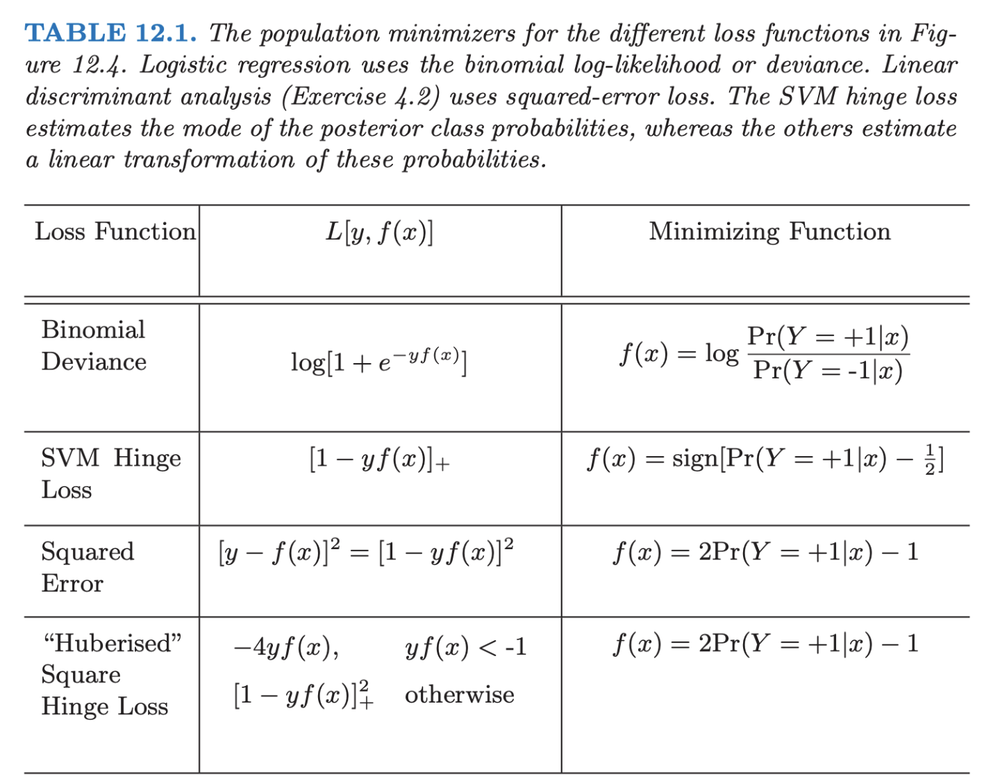
1. Modifying the Loss Function
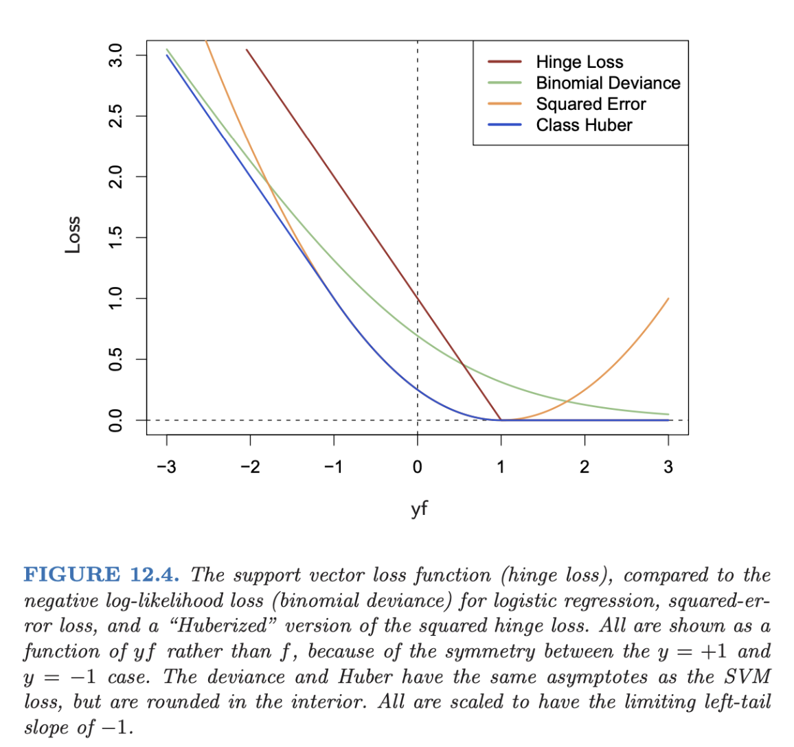
2. Modifying the Penalty Function
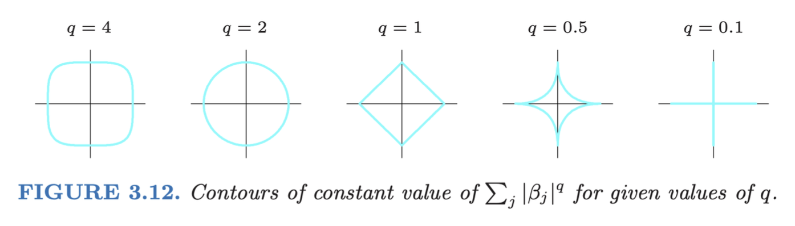
2. Modifying the Penalty Function
Minimax concave penalty (MCP):
\[P_{\lambda,\gamma}(\beta)=\begin{cases}\lambda|\beta|-\beta^2/(2\gamma)&\text{if }|\beta|\le\lambda\gamma\\\frac12\gamma\lambda^2&\text{if }|\beta|>\lambda\gamma\end{cases}\]
Smoothly clipped absolute deviations (SCAD) penalty:
\[P_{\lambda,\gamma}(\beta)=\begin{cases}\lambda|\beta|&\text{if }|\beta|\le\lambda\\\frac{2\gamma\lambda|\beta|-\beta^2-\lambda^2}{2(\gamma-1)}&\text{if }\lambda<|\beta|<\lambda\gamma\\\frac{\lambda^2(\gamma+1)}2&\text{if }|\beta|>\lambda\gamma\end{cases}\]
Truncated LASSO Penalty (TLP)
\[P_{\lambda,\tau}(\beta)=\lambda\cdot\min(|\beta|/\tau,1)\]
Implementation for MCP and SCAD: ncvreg, TLP: glmtlp
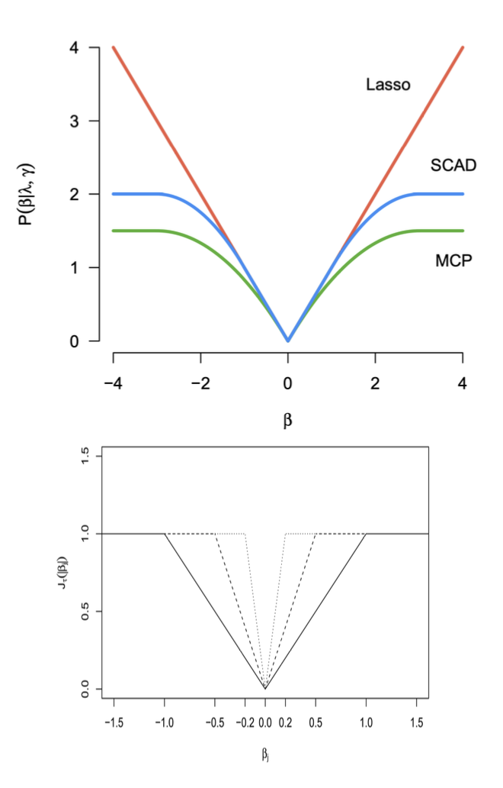
2. Modifying the Penalty Function
Then why use these ‘non-standard’ forms of penalty?
Motivating question: in this time series data, can we identify the jumping points where means change?
We assume
\[y_i\sim N(\mu_j,\sigma^2)\]
where \(\mu_j\) are distinct means
We want \(\mu_j\) to be mostly constant over time except for the jumping points.
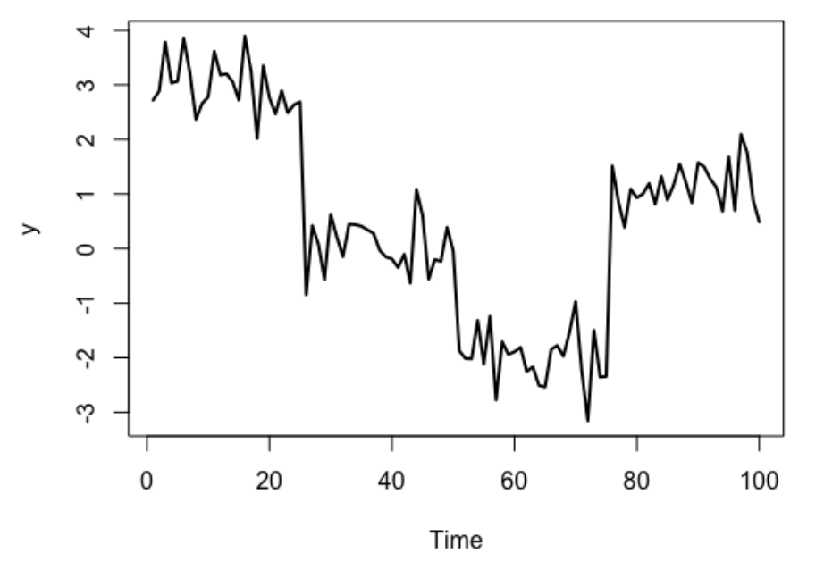
The LASSO penalty can be modified to induce smoothing.
\[\min_{\beta\in\mathbb R^n}\left\{\sum_{i=1}^N(y_i-\beta_0-\beta_i)^2+\lambda\sum_{i=1}^{n-1}|\beta_{i+1}-\beta_i|\right\}.\]
The ‘loss function’ assumes that each \(y_i\) has different means, but
The penalty function penalizes the ‘difference between the means’ between two time points \((i,i+1)\)
Because of the LASSO penalty, many \((\beta_{i+1}-\beta_i)\) terms will shrink to 0.
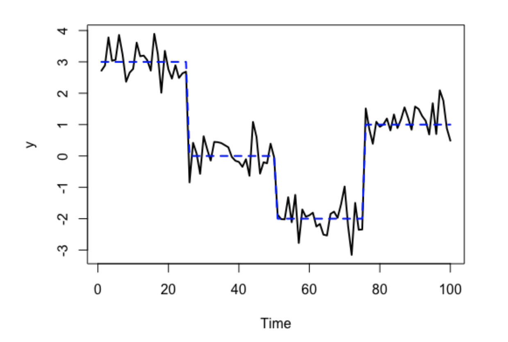
1. Cross Validation
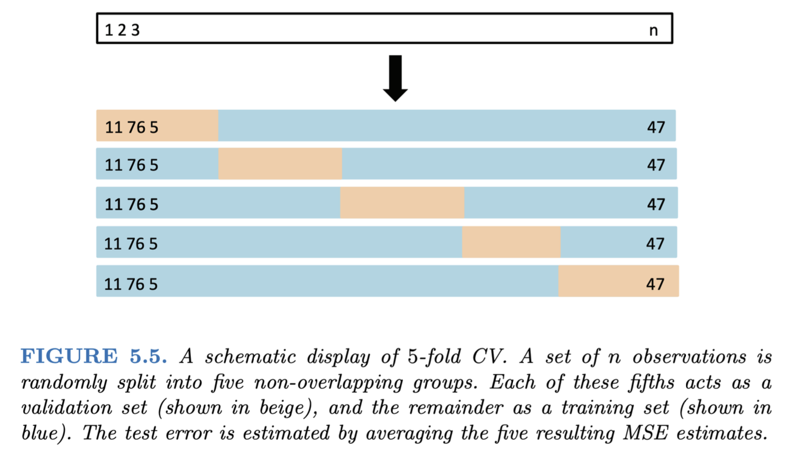
1. Cross Validation
Procedures (5 fold CV) in comparing different models
Choose 4 folds out of 5, fit each model \(\Rightarrow f_{train}(\cdot)\).
Apply it to the fold \(\{y_{test},X_{test}\}\) not used in 1 and compute the predicted MSE:
\[\mathrm{MSE}_{test}=\|y_{test}-f_{train}(X)\|_2^2\]
Repeat 1 and 2 5 times using different folds of data, and take the average MSE across 5 folds for each model.
Choose the model with the lowest average MSE.
1. Cross Validation
For LASSO/Ridge/Elastic net, glmnet has an option cv.glmnet() function that implment CV-based choice of \(\lambda\).
The red dots denote for average prediction error for each (\(\lambda\)) value using cross validation. It neither chose \(\lambda=0\) or \(\lambda=\infty\) but chose \(\log(\lambda)\approx-2.1\) that is the ‘best’ in making a balance between bias and variance.
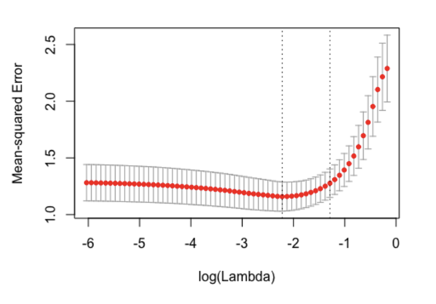
1. Cross Validation
2. Generalized Cross Validation
If we restrict our attention to a linear smoother fit where a fitted model could be represented by \(\hat y=S_\lambda y\) for some \(S_\lambda\), then generalized cross validation (GCV) approximates the LOOCV.
\[\mathrm{GCV}(\lambda)=\frac{\|y-\hat y\|^2/n}{(1-\mathrm{tr}(S_\lambda)/n)^2},\]
Ridge regression is an example of linear smoother, but LASSO and other methods aren’t.
Despite its name, GCV does not partition data into several folds. It requires fitting model once for each \(\lambda\). (computationally efficient)
The \(1-\mathrm{tr}(S_\lambda)/n\) in the denominator is called the ‘effective degrees of freedom’ that summarizes the model complexity for a specific \(\lambda\) value.
3. Likelihood Based Approaches
Alternative viewpoint for Ridge regression:
\[y=X\beta+\epsilon\quad\text{where}\quad\beta\sim MVN(0,\tau^2I)\quad\text{and}\quad\epsilon\sim MVN(0,\sigma^2I)\]
under this setup,
Alternatively, you may think of \(\tau^2\) given in the form of prior in Bayesian linear regression.
Bias-variance tradeoff: Introducing some bias can reduce variance and improve prediction accuracy.
Penalized regression: We minimize a loss function plus a penalty to control model complexity and prevent overfitting.
Common penalties:
Extensions: Different loss functions and penalties allow us to address different modelling goals.
Choosing tuning parameters:
Announcements: Assignment available on course website, due Dec. 4th